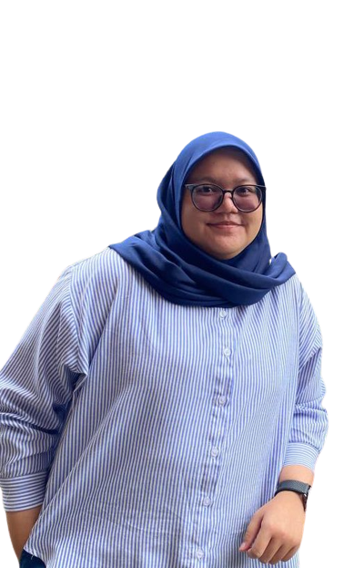

PROFILE
Omar Daniel Assegaf, S.I.Kom. Lahir tanggal 9 April 1995 di Surakarta, Jawa Tengah, Indonesia. Omar adalah pemeran, model, dan presenter Indonesia keturunan Arab, Jawa, dan Belanda. Sebagai anak bungsu dari empat bersaudara. Seluruh kakak kandungnya, yakni Aisya Melissa, Hadijah Tania, dan Kamila merupakan seorang perempuan. Omar merupakan keturunan keluarga Alawiyyin yang berdarah Arab dari etnis Hadhrami, dengan marga Assegaf. Ayahnya, Ali Reza Assegaf, merupakan seorang pengusaha swasta yang juga lahir di Surakarta dan ibunya bernama Farida Achmad. Omar mewarisi darah Arab, Belanda, dan Jawa dari sang kakek.PENDIDIKAN
Omar lulus dari SMA Batik 1 Surakarta pada tahun 2013. Kemudian, ia melanjutkan studinya di Jakarta, yakni di Universitas Mercu Buana. Pada 26 Juli 2016, ia lulus dengan gelar Sarjana Ilmu Komunikasi di Indonesia Convention Exhibition, Bumi Serpong Damai, Tangerang Selatan. Omar berhasil menyelesaikan kuliahnya selama 3 tahun 7 bulan dengan indeks prestasi kumulatif 3,75PERJALANAN KARIR
Omar Daniel mengawali kariernya sebagai seorang model. Tak lama setelah itu, ia mendapatkan tawaran iklan. Hal itulah yang membuat dirinya sukses hingga banyak warganet yang penasaran bahkan mencari tahu pacar Omar Daniel. Selain itu, ia juga mendapatkan banyak tawaran untuk bergabung menjadi pemain sinetron atau FTV. Diketahui, ia sempat menolak tawaran itu sebanyak 3 kali. Namun akhirnya ia pun mencoba berkecimpung ke dunia akting setalah dibujuk oleh sang produser. Adapun akting pertama yang dibintangi adalah Anak Jalanan pada tahun 2016 silam. Kemudian ia memainkan beberapa film, webseries, dan sinetron. berikut daftar judul film dan serial web yang pernah diperankan oleh Omar Daniel.| Tahun | Judul Film | Peran | Catatan |
|---|---|---|---|
| 2021 | Tentang Rindu | Rendi | - |
| I | Sanjaya | - | |
| Survive | Sanjaya | - | |
| Langit Kala Senja | Bima | - | |
| 2022 | Enam Batang | Arya | - |
| Satria Dewa : Gataotkaca | Dananjaya | - | |
| Qorin | Ustad Jaelani | - | |
| Tumbal Kanjeng Iblis | Nathan | - | |
| 2023 | Hati Suhita | Gus Birru | - |
| Invalidite | Dewa Pradipta | - | |
| TBA | Suami Yang Lain | - | - |
| Satria Dewa : Arjuna | Dananjaya/Arjuna | - |
| Judul Webseries | Tahun | Peran | Catatan |
|---|---|---|---|
| 2021 | Ritual The Series | Adam | Episode : "Calon Mantu" |
| Cinta Fitri | Aldiansyah Armando/Aldo | - | |
| Write Me a Love Song | Aldo | - | |
| 2022 | The Sexy Doctor Is Mine | Revano Ilyasa Nugraha | - |
| 2021 | Mantan Tapi Menikah | Ajisaka Ramadhan | - |
| Progresnya Berapa Persen? | Dewangga | - | |
| The Sexy Doctor Is Mine 2 | Revano Ilyasa Nugraha | - |
Keterangan :
TBA : To Be Announced [Belum Dirilis]
For More Content , Please Visit Our Social Media :
Nama : Nabilla Haliza
NIM : 11210251000006
Kelas : 5A | Ilmu Perpustakaan
